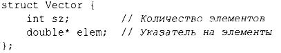
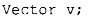
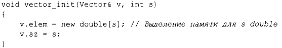
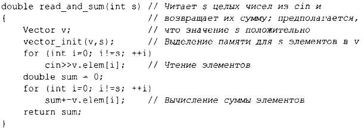
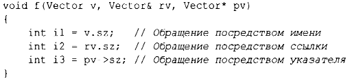

⇐2.1. Введение Содержание 2.3. Классы⇒
Первым шагом в создании нового типа часто является организация необходимых ему элементов в структуре данных struct:
Эта, первая, версия Vector состоит из int и douЫe*.
Переменная типа Vector может быть определена следующим образом:
Однако само по себе это не слишком полезно, потому что указатель elem в v не указывает ни на что. Для того чтобы объект был полезным, у объекта v должны быть некоторые элементы, на которые он мог бы указывать. Например, мы можем построить Vector следующим образом:
То есть элемент elem объекта v получает значение указателя, созданного оператором new, а член sz объекта v получает количество элементов. Знак & в Vector& указывает, что мы передаем v как неконстантную ссылку(§ 1.7). Таким образом, функция vector ini t() может модифицировать переданный ей вектор.
Оператор new выделяет память из области, именуемой свободной памятью (известной также как динамическая память или куча). Выделенные в свободной памяти объекты не зависят от области видимости, в которой они создаются, и продолжают существовать до тех пор, пока не будут уничтожены с помощью оператора delete (§4.2.2).
Простое применение Vector имеет следующий вид:
Нам нужно пройти долгий путь до того, как наш Vector станет таким же элегантным и гибким, как vector из стандартной библиотеки. В частности, пользователь Vector должен знать каждую деталь представления Vector. В оставшейся части этой главы и в следующих двух происходит постепенное улучшение Vector, как пример языковых возможностей и технологий. В главе 11, "Контейнеры", представлен vector стандартной библиотеки, который содержит множество улучшений.
Я использую vector и другие компоненты стандартной библиотеки как примеры
Не следует изобретать велосипед и компоненты стандартной библиотеки наподобие vector или string; просто воспользуйтесь ими.
Для обращения к членам struct посредством имени (или ссылки) мы используем точку (.), а для обращения через указатель - оператор - >. Например:
